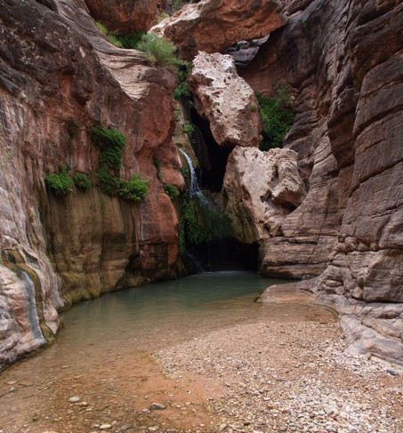
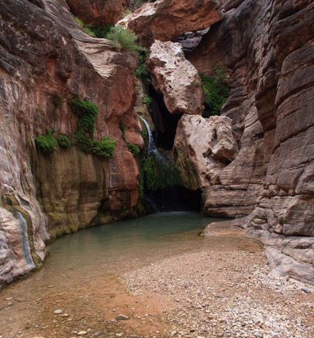

Embark on thrills, embrace nature creating unforgettable river rafting adventures that unite hearts with the wild that connect people to the beauty of nature.

Embark on thrills, embrace nature creating unforgettable river rafting adventures that unite hearts with the wild that connect people to the beauty of nature.
Down The River Rafting has been crafting extraordinary adventures for over 50 years, connecting thrill-seekers with the untamed beauty of nature. Established in 1975 by a group of passionate river enthusiasts, the company began as a small family-run operation with a singular focus: to share the magic of rafting with others. Over the decades, it has grown into a cherished institution, welcoming adventurers from around the globe. From humble beginnings on local rivers to becoming a leader in eco-friendly tourism, Down The River Rafting has remained true to its roots—delivering unforgettable experiences while fostering a deep respect for the natural world


 
